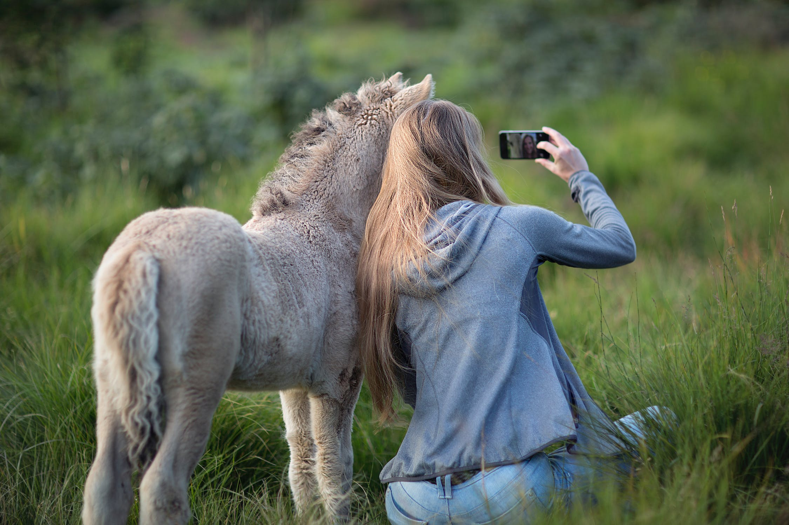

The hill is covered in lush, green grass, and its gentle slope leads up to a slightly rocky summit. The sunlight casts a warm, golden glow over the scene, with shadows stretching across the hillside. On the left side of the image, there are a few scattered trees adding to the overall picturesque scenery.

The snow hill image presents a winter wonderland scene, capturing the beauty of a snow-covered landscape. The hill is blanketed in a thick layer of pristine, glistening white snow, creating a smooth and undisturbed surface. The snow extends from the base of the hill to its peak, with no visible vegetation or rocks due to the heavy snowfall.

The image features a winding road that stretches through a picturesque countryside, flanked by a majestic hill on one side. The road is well-paved and smoothly curving, inviting travelers to embark on a scenic journey. It disappears into the distance, leading the viewer's gaze further into the heart of the countryside.

The image features a charming home nestled on the side of a gentle hill, creating a harmonious blend between architecture and nature. The house is a quaint, two-story cottage with a pitched roof, adorned with a few dormer windows and a cozy chimney. Its exterior is painted in a soft, welcoming color, perhaps a warm beige or a calming pastel hue.

❮
❯
The girl, likely in her early childhood, wears a bright and cheerful outfit, indicating her joyful and carefree nature. Her eyes are filled with wonder and delight as she looks at the small horse with affection. A radiant smile graces her face, reflecting the joy she experiences in the presence of her equine friend.